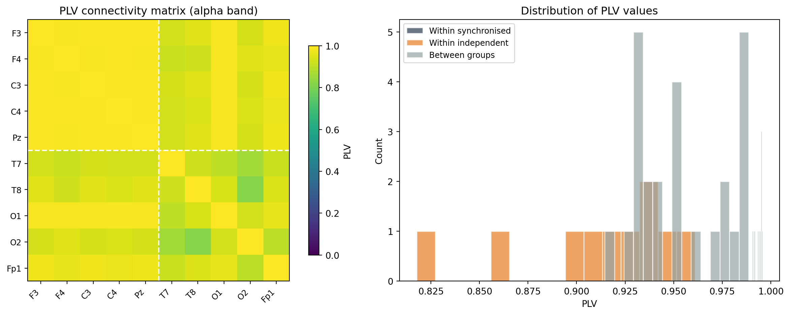

import numpy as np
from scipy.signal import hilbert, butter, filtfilt
# Assume data has shape (n_channels, n_samples)
sfreq = 256
n_channels = data.shape[0]
# Step 1: band-pass filter to alpha
b, a = butter(4, [8, 13], btype="band", fs=sfreq)
filtered = np.zeros_like(data)
for ch in range(n_channels):
filtered[ch] = filtfilt(b, a, data[ch])
# Step 2: Hilbert transform to get phase
phases = np.zeros_like(filtered)
for ch in range(n_channels):
phases[ch] = np.angle(hilbert(filtered[ch]))
# Steps 3-5: compute PLV matrix
plv_matrix = np.zeros((n_channels, n_channels))
n_samples = data.shape[1]
for i in range(n_channels):
for j in range(i + 1, n_channels):
phase_diff = phases[i] - phases[j]
plv = np.abs(np.mean(np.exp(1j * phase_diff)))
plv_matrix[i, j] = plv
plv_matrix[j, i] = plv
np.fill_diagonal(plv_matrix, 1.0)Phase-locking value (PLV)
connectivity
phase
What PLV measures, the formula, computing PLV from instantaneous phase, interpreting values (0 = no coupling, 1 = perfect coupling), PLV vs coherence, limitations, connectivity matrices, and plotting.
Why this topic matters
If you want to know whether two brain regions are communicating, one approach is to ask: do they oscillate together? More precisely, is the phase relationship between their oscillations consistent over time? The phase-locking value (PLV) answers exactly this question. It measures how stable the phase difference between two signals is across a time window, giving a value between 0 (no consistent relationship) and 1 (perfectly locked phases).
PLV is one of the most widely used connectivity measures in EEG and MEG research. It is conceptually simple, computationally straightforward, and directly interpretable. It also forms the foundation for more advanced measures like the phase alignment matrix and metastability analysis.
What PLV measures
PLV quantifies the consistency of the phase difference between two signals over time. It does not measure whether the signals have the same amplitude, or whether one leads or lags the other by a specific amount. It only asks: whatever the phase difference is, does it stay the same?
Two signals can be phase-locked at any phase difference. If signal A always leads signal B by 90 degrees, that is perfect phase locking (PLV = 1), even though the signals are not in phase. If the phase difference drifts randomly from trial to trial or from moment to moment, PLV approaches 0.
The formula
For two channels \(i\) and \(j\) with instantaneous phases \(\phi_i(t)\) and \(\phi_j(t)\) extracted via the Hilbert transform, the PLV over a time window of \(T\) samples is:
\[\text{PLV}_{ij} = \left| \frac{1}{T} \sum_{t=1}^{T} e^{i(\phi_i(t) - \phi_j(t))} \right|\]
The phase difference \(\Delta\phi(t) = \phi_i(t) - \phi_j(t)\) at each time point is represented as a unit vector on the complex plane via \(e^{i\Delta\phi(t)}\). These unit vectors are averaged, and the magnitude of the average is taken.
The intuition is geometric. Each unit vector points in the direction of the phase difference at that time point. If the phase difference is constant, all vectors point the same way, and their average has magnitude 1. If the phase difference varies randomly, the vectors point in all directions and their average is close to 0.
Trial-based PLV
In event-related designs, you can compute PLV across trials instead of across time. For each trial \(k\), extract the phase difference at a specific time point (or averaged over a short window), then compute:
\[\text{PLV}_{ij}(t) = \left| \frac{1}{K} \sum_{k=1}^{K} e^{i(\phi_i^k(t) - \phi_j^k(t))} \right|\]
This gives a time-resolved PLV that shows how inter-trial phase consistency changes over the course of a trial.
Computing PLV step by step
The computation follows a clear pipeline:
- Band-pass filter the signal to the frequency band of interest (e.g., 8–13 Hz for alpha).
- Apply the Hilbert transform to obtain the instantaneous phase for each channel.
- Compute phase differences between all channel pairs.
- Average the complex exponentials of the phase differences over the time window.
- Take the magnitude of the average.
Vectorised version
The loop above is clear but slow for many channels. A vectorised version computes all pairs at once:
# Vectorised PLV computation
complex_phase = np.exp(1j * phases) # shape: (n_channels, n_samples)
# Outer product of complex phases, averaged over time
plv_matrix = np.abs(
complex_phase @ complex_phase.conj().T / n_samples
)This is much faster because it uses matrix multiplication instead of nested loops.
Interpreting PLV values
- PLV = 0: no phase locking. The phase difference between the two signals is uniformly distributed; there is no consistent temporal relationship.
- PLV = 1: perfect phase locking. The phase difference is constant over the entire time window.
- PLV between 0.2 and 0.5: typical range for meaningful connectivity in scalp EEG. Values in this range usually indicate that two regions are exchanging information or are driven by a common source.
- PLV > 0.8: unusually high for scalp EEG between distant electrodes. This could indicate volume conduction (the same source is picked up by both electrodes) or an artefact.
Importantly, PLV has a positive bias: even for two completely independent signals, PLV will not be exactly zero because of finite sample size. With \(T\) time points, the expected PLV for independent signals is approximately \(1/\sqrt{T}\). For a 10-second recording at 256 Hz (\(T = 2560\)), this bias is about 0.02. For shorter windows, the bias can be substantial.
PLV vs coherence
PLV and coherence are related but not identical:
| Feature | PLV | Coherence |
|---|---|---|
| Input | Instantaneous phase (narrowband) | Raw signal (broadband) |
| What it measures | Phase consistency | Phase + amplitude co-variation |
| Amplitude sensitivity | No (uses only phase) | Yes (amplitude matters) |
| Frequency specificity | Set by the band-pass filter | Set by the FFT window |
Coherence is computed from the cross-spectral density and is sensitive to both phase consistency and correlated amplitude fluctuations. A change in coherence could reflect a change in phase locking, a change in amplitude correlation, or both. PLV isolates the phase component, which makes it easier to interpret but means it misses amplitude-based coupling.
In practice, PLV is preferred when you care specifically about phase relationships (e.g., for studying neural synchronisation). Coherence is preferred when you want a more general measure of spectral similarity between two signals.
Limitations of PLV
Volume conduction
EEG signals are measured on the scalp, not at the brain surface. Because the skull and scalp spread electrical fields, a single neural source produces signals at multiple electrodes. Two nearby electrodes will have high PLV simply because they are both recording the same source, not because two different brain regions are communicating.
This is the volume conduction problem, and it affects all connectivity measures computed from sensor-level EEG. Possible mitigations include:
- Using source-localised data (beamforming, minimum-norm estimates) before computing PLV.
- Using connectivity measures that are insensitive to zero-lag coupling, such as the imaginary part of coherence or the phase lag index (PLI).
- Interpreting high PLV between nearby electrodes with caution.
Reference dependence
PLV values change depending on the reference scheme used (average reference, linked mastoids, Cz reference, etc.). This is because re-referencing changes the phase of each channel. There is no universally “correct” reference, but the average reference is the most commonly used for connectivity analyses.
Window length
PLV is computed over a time window, and the result depends on the window length. Shorter windows give noisier estimates (higher positive bias) and may miss slow fluctuations in connectivity. Longer windows give more stable estimates but average over any changes that happen within the window.
A sliding-window approach (computing PLV in overlapping windows across time) can reveal how connectivity changes over the course of a recording.
Building and plotting connectivity matrices
A PLV connectivity matrix is an \(N \times N\) symmetric matrix where each entry \((i, j)\) is the PLV between channels \(i\) and \(j\). These matrices are the starting point for network analysis of brain connectivity.
import matplotlib.pyplot as plt
fig, ax = plt.subplots(figsize=(8, 7))
im = ax.imshow(plv_matrix, cmap="viridis", vmin=0, vmax=1,
interpolation="nearest")
ax.set_xticks(range(n_channels))
ax.set_yticks(range(n_channels))
ax.set_xticklabels(channel_names, rotation=90, fontsize=7)
ax.set_yticklabels(channel_names, fontsize=7)
ax.set_title("PLV connectivity matrix (alpha band)")
plt.colorbar(im, ax=ax, label="PLV")
plt.tight_layout()
plt.show()Working example
The code below simulates two groups of channels with different levels of phase coupling, computes the PLV matrix, and visualises the results.
import numpy as np
import matplotlib.pyplot as plt
from scipy.signal import hilbert, butter, filtfilt
rng = np.random.default_rng(42)
# ── Simulation ──────────────────────────────────────────────
n_channels = 10
sfreq = 256
duration = 30 # seconds
n_samples = sfreq * duration
times = np.arange(n_samples) / sfreq
channel_names = ["F3", "F4", "C3", "C4", "Pz",
"T7", "T8", "O1", "O2", "Fp1"]
# Common oscillation (10 Hz) with slow phase drift
common_phase = (2 * np.pi * 10 * times
+ 0.5 * np.cumsum(rng.standard_normal(n_samples) / sfreq))
common_signal = np.sin(common_phase)
data = np.zeros((n_channels, n_samples))
for ch in range(n_channels):
# Independent oscillation
ind_phase = (2 * np.pi * 10 * times
+ 3.0 * np.cumsum(
rng.standard_normal(n_samples) / sfreq))
ind_signal = np.sin(ind_phase)
if ch < 5:
# Synchronised group: strong coupling to common signal
coupling = 0.85 + rng.uniform(-0.05, 0.05)
data[ch] = (coupling * common_signal
+ (1 - coupling) * ind_signal
+ 0.3 * rng.standard_normal(n_samples))
else:
# Independent group: weak coupling
coupling = 0.1 + rng.uniform(-0.05, 0.05)
data[ch] = (coupling * common_signal
+ (1 - coupling) * ind_signal
+ 0.3 * rng.standard_normal(n_samples))
# ── Band-pass filter and Hilbert transform ──────────────────
b, a = butter(4, [8, 13], btype="band", fs=sfreq)
phases = np.zeros_like(data)
for ch in range(n_channels):
filtered = filtfilt(b, a, data[ch])
phases[ch] = np.angle(hilbert(filtered))
# ── Compute PLV matrix ─────────────────────────────────────
complex_phase = np.exp(1j * phases)
plv_matrix = np.abs(complex_phase @ complex_phase.conj().T / n_samples)
# ── Visualise ──────────────────────────────────────────────
fig, axes = plt.subplots(1, 2, figsize=(13, 5))
# Left: PLV matrix
ax = axes[0]
im = ax.imshow(plv_matrix, cmap="viridis", vmin=0, vmax=1,
interpolation="nearest")
ax.set_xticks(range(n_channels))
ax.set_yticks(range(n_channels))
ax.set_xticklabels(channel_names, rotation=45, ha="right", fontsize=9)
ax.set_yticklabels(channel_names, fontsize=9)
ax.set_title("PLV connectivity matrix (alpha band)")
plt.colorbar(im, ax=ax, label="PLV", shrink=0.8)
# Draw group boundaries
ax.axhline(4.5, color="white", linewidth=1.5, linestyle="--")
ax.axvline(4.5, color="white", linewidth=1.5, linestyle="--")
# Right: histogram of PLV values
ax = axes[1]
# Extract upper triangle (excluding diagonal)
upper_tri = plv_matrix[np.triu_indices(n_channels, k=1)]
within_sync = []
within_indep = []
between = []
for i in range(n_channels):
for j in range(i + 1, n_channels):
if i < 5 and j < 5:
within_sync.append(plv_matrix[i, j])
elif i >= 5 and j >= 5:
within_indep.append(plv_matrix[i, j])
else:
between.append(plv_matrix[i, j])
ax.hist(within_sync, bins=15, alpha=0.7, color="#2c3e50",
label="Within synchronised", edgecolor="white")
ax.hist(within_indep, bins=15, alpha=0.7, color="#e67e22",
label="Within independent", edgecolor="white")
ax.hist(between, bins=15, alpha=0.7, color="#95a5a6",
label="Between groups", edgecolor="white")
ax.set_xlabel("PLV")
ax.set_ylabel("Count")
ax.set_title("Distribution of PLV values")
ax.legend(fontsize=9)
plt.tight_layout()
plt.show()
# ── Print summary ──────────────────────────────────────────
print(f"Mean PLV within synchronised group: "
f"{np.mean(within_sync):.3f}")
print(f"Mean PLV within independent group: "
f"{np.mean(within_indep):.3f}")
print(f"Mean PLV between groups: "
f"{np.mean(between):.3f}")
Mean PLV within synchronised group: 0.994
Mean PLV within independent group: 0.911
Mean PLV between groups: 0.954The matrix clearly shows the block structure: the top-left 5x5 block (synchronised channels) has high PLV values, while the bottom-right 5x5 block (independent channels) has low values. The off-diagonal blocks (between groups) also show low PLV. The histogram on the right separates the three types of channel pairs, confirming the quantitative difference.
Key takeaways
- PLV measures the consistency of the phase difference between two signals over time. It ranges from 0 (no phase locking) to 1 (perfect phase locking).
- The computation requires band-pass filtering and the Hilbert transform to extract instantaneous phase before computing the phase difference statistics.
- PLV is amplitude-independent: it uses only phase information. This distinguishes it from coherence, which also captures amplitude co-variation.
- PLV has a positive bias for finite samples. With \(T\) time points, independent signals produce an expected PLV of approximately \(1/\sqrt{T}\).
- The main limitations are volume conduction (nearby electrodes share signal from the same source), reference dependence (PLV changes with the reference scheme), and window length effects. Consider source-level analysis or lag-insensitive measures (e.g., PLI) for more robust connectivity estimation.
- PLV connectivity matrices are the building blocks for network-level analyses, including graph theory metrics, community detection, and metastability computation.